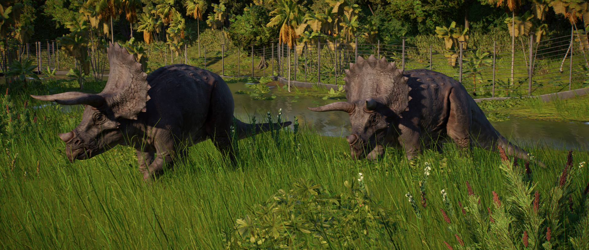

O dinossauro herbívoro Triceratops é um dos maiores ceratopsídeos, com cerca de 9 m de comprimento e pesando 12 toneladas. Famoso por seu grande rufo e os três chifres na cabeça (que dão origem ao seu nome, que se traduz como “rosto com três chifres”), sua dieta consiste principalmente de vegetação ao nível do solo, embora seu tamanho permita que ele derrube plantas e árvores maiores para se alimentar.